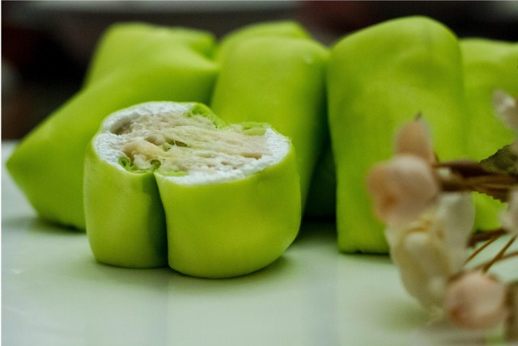

Singkong Thailand

Makanan yang memiliki rasa yang sangat lezat ini tidak lain adalah pancake durian, karena memiliki rasa durian yang lumer dimulut, dan lembutnya kulit pancake yang tidak ada duanya. Pancake yang berbahan utama durian ini memiliki bentuk menyerupai bantal empuk yang sangat menggoda selera, ditambah warna-warna kulit pancake ini sangat berparian, menambah minat seseorang untuk mencobanya.
Pembuatnya pun sangat mudah sebenarnya namun mendapatkan bahan-bahanya yang akan sulit, karen durian terkadang ssah didapatkan ketika lagi tidak musim, dan ternyata bila kita membelinya diluar kue pancake ini sangat banyak merogoh saku kita, itulah sebabnya mending anda membuatnya saja.
Cara membuat:
1. Siapkan wadah untuk adonan, kemudian masukan tepung terigu dan sedikit garam, aduk sampai tercampur
2. Masukan telur ayam untuk melekatkan bahan adonan yang akan dibuat, aduk terus sampai adonan kalis dan jadi
3. Kemudian tuangkan santan kental untuk menambah kelezatan adonan, aduk terus hingga semua rata, setelah itu tuangkan lagi pasta pandan siap saji kedalam adonan tersebut dan aduk lagi
4.
Siapkan adonan yang sudah jadi untuk pembuatan kulit pancake, dengan cara simpan adonan tadi di atas wajan yang sudah diolesi minyak agar tidak lengket
5. Bentuk adonan hingga berbentuk seperti dadar sampai tipis agar adonan bisa dipakai, kemudian masak selama kira-kira 2 menitan dan matang, lakukan sampai semuanya habis
7. Untuk isi pancakenya, Siapkan kulit pancake yang tadi telah dibuat, olesi bagian tengah pancake dengan krim kocok kurang lebih 1 sendok makan, lalu ratakan
8. Isi bagian dalam kulit pancake dengan daging buah durian kurang lebih 2 sendok makan, kemudian lipat kulit pancake membentuk seperti bantal, lakukan hingga adonan daging durian habis dan selesai
9. Bila semua sudah beres mulai masukan pancake yang sudah berbentuk bantal tadi kedalam lemari es agar pancake menjadi segar dan sedikit membeku
10. Bila telah selesai angkat dan sajikan